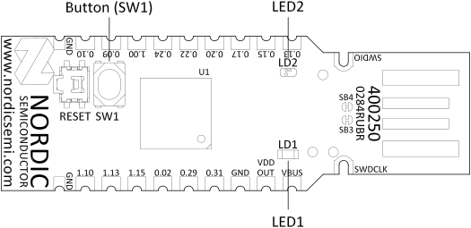
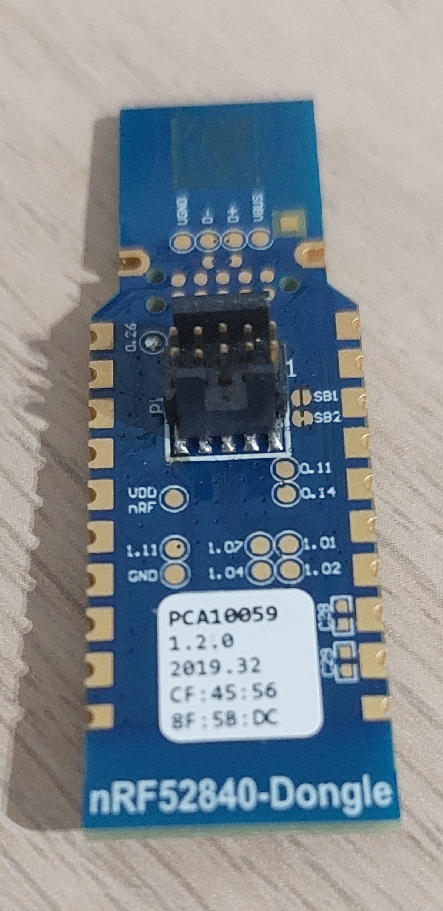

Flashing sample applications
Preparing environment
Prepare the development environment first as described in Environment setup document.
nRF52840 buttons and LEDs

Required hardware
You need following hardware to flash apps:
-
nRF52840 dongle - this is the target device on which Fobnail firmware runs.
-
nRF52840-DK - development board used for dongle flashing and debugging.
-
SWD Cable - 2x5 1.27 mm pitch IDC cable used for connecting dongle to debugger.
-
Adafruit 4048 header - nRF dongle comes without SWD header, so it must be soldered. This is the same header as used in nRF52840-DK board.
When soldered, 4048 header's notch must face direction opposite to USB plug.

Preparing debugger
We use cargo-embed for firmware flashing and debugging, which internally uses
probe-rs, so you need a compatible debugger. We are using
nRF52840-DK
development board, which exposes a JLink-compatible interface. To check whether
your debugger is supported, start Fobnail SDK and run probe-rs-cli list. You
see similar output:
The following devices were found:
[0]: J-Link (J-Link) (VID: 1366, PID: 1015, Serial: 000683081460, JLink)
If probe-rs does not detect debugger, that could mean it is not supported. You
can set RUST_LOG=trace environment variable to retry scanning with debug
output enabled.
For debugger to work, you need to add an Udev rule granting you correct permissions:
SUBSYSTEM=="usb", ATTR{idVendor}=="1366", ATTR{idProduct}=="1015", OWNER="akowalski", MODE="0660"
Replace idVendor and idProduct and OWNER with correct VID, PID and your
user name, save this to /etc/udev/rules.d/99-usb.rules, then run
sudo systemctl reload systemd-udevd to apply these rules without rebooting.
Building and flashing blinky sample
In order to flash a sample application on the nRF52840 dongle we will use blinky sample application from our nrf-hal fork. Follow the steps below to build and flash blinky sample:
- Power on dongle and connect it to debugger.
- Go to
nrf-haldirectory - Run the fobnail-sdk container with
./run-container.sh. - Go to
examples/blinky-demo-nrf52840 - Execute
cargo embed --target thumbv7em-none-eabihf. This command will build the sample app, flash it onto target device and spawn RTT console (sort of UART-over-JTAG). - Both green and red LEDs should start blinking, you should see RTT console
with similar message:
10:31:50.887 Blinky demo starting
Summary
Cargo-embed provides great tools with very comfortable single-command solution for building and testing firmware.